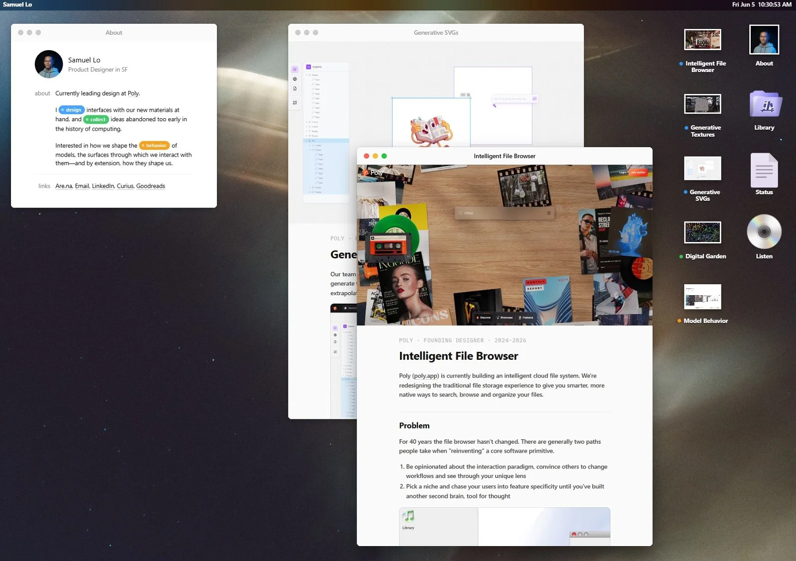

Samuel's Desktop
- Портфолио
- Личные сайты и портфолио
- Дизайнер
- Дизайнерам
- Продуктовым командам
- Минимализм
- Игривый
- Тёмная тема
- Фиолетовый фон
- Drag-взаимодействие
- Микроанимации
- Next.js
- React
- Английский язык
- США
- Действующий сайт

Что это
Портфолио Сэмюэла Ло, сделанное как рабочий стол macOS. Слева открыто окно About с фотографией и рассказом, рядом — окна проектов и папки на рабочем столе; всё можно перетаскивать. Среди иконок — Intelligent File Browser, Generative Textures, Generative SVGs, Digital Garden, Model Behavior, Library и Status. Необычный сайт дизайнера Сэмюэла Ло, стилизованный под macOS. Каждый проект открывается по клику на иконку в виде перетаскиваемого окна прямо на главной странице, имитируя работу операционной системы.
Что смотреть в первую очередь
Перетащить окна About и Intelligent File Browser, открыть папки на рабочем столе и переключить Desktop 1 / Desktop 2.
Приёмы
- Drag-взаимодействие
- Микроанимации
Интересные факты
- Экран выглядит как macOS: строка меню Samuel Lo слева, дата и время справа, тёмные обои с мягкими пятнами света.
- Поверх рабочего стола открыты перетаскиваемые окна: About, Generic SVGs и Intelligent File Browser.
- Справа — иконки-папки и документы: Intelligent File Browser, About, Library, Generative Textures, Generative SVGs, Status, Digital Garden, Listen и Model Behavior.
- В About — фото, имя Samuel Lo, подпись Product Designer in SF и ссылки Are.na, Email, LinkedIn, Curius, Goodreads.
- Окно проекта показывает кейс Poly: обложку, заголовок, проблему и текстовые блоки; окна можно двигать и складывать.
- Внизу страницы — переключатель Desktop 1 / Desktop 2 и статус-бар; сайт собран на Next.js.
Паспорт
- Домен
- samuello.me
- Тип сайта
- Портфолио
- Категории
- Личные сайты и портфолио
- Подкатегории
- Дизайнер
- Для кого
- Дизайнерам, Продуктовым командам
- Стиль
- Минимализм, Игривый
- Язык
- Английский
- Страна
- США, Сан-Франциско
- Автор
- Сэмюэл Ло
- Год
- не указано
- Добавлен в коллекцию
- 23.11.2026
Палитра
-
#2A252B— 40% кадра -
#F9F9F9— 34% кадра -
#554E42— 7% кадра -
#796C5F— 5% кадра -
#A38163— 4% кадра
- Режим
- Тёмная
- Цвет фона
- Фиолетовый
Технологии
- Next.js
- React